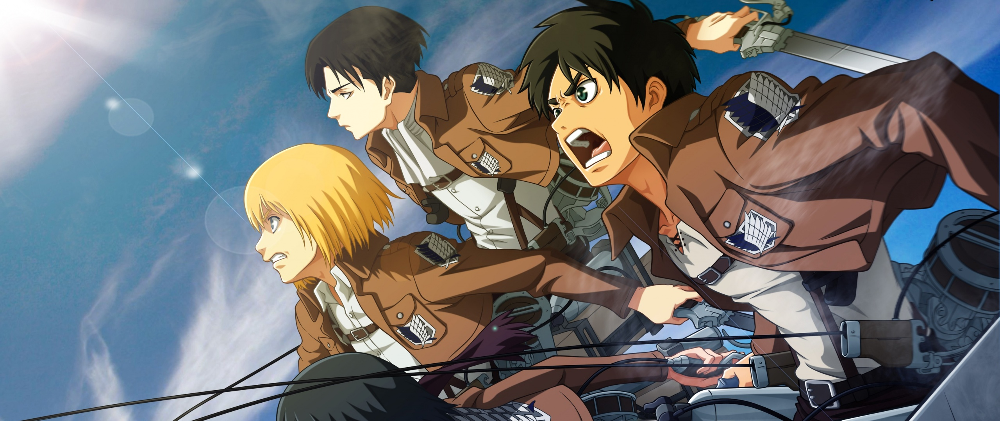
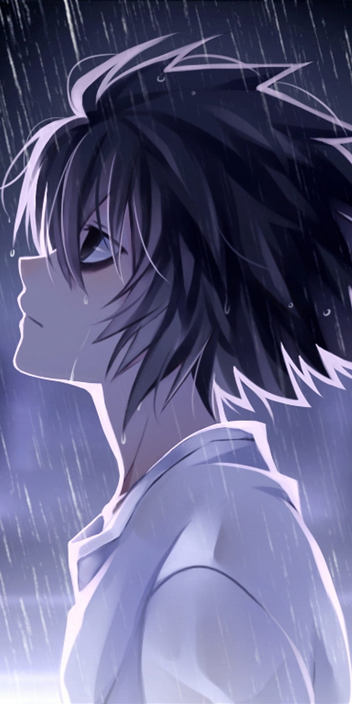
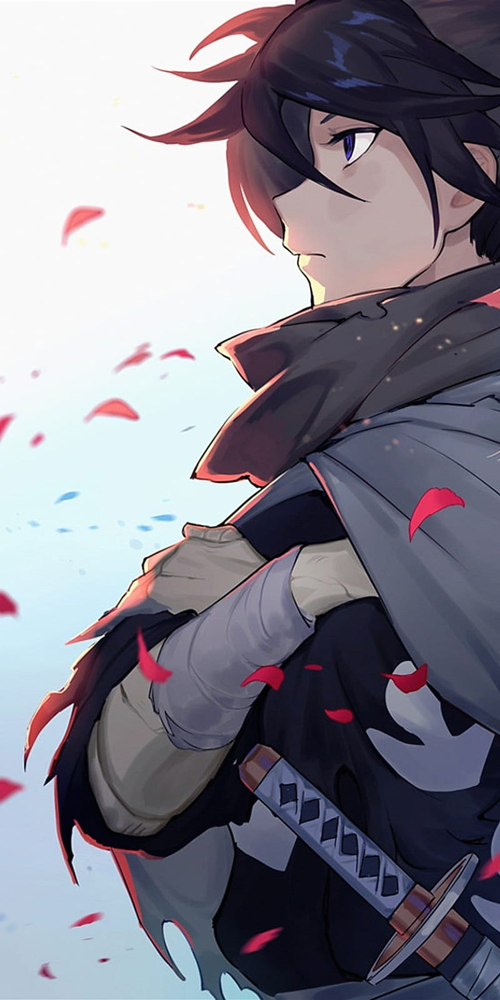

Manga Library
| Anime Cover | Anime Name | Overview | Rating | Links to Manga |
|---|---|---|---|---|
|  | Apocalypse |
When the world ended, they were strangers.
Five years after the Black Rain—a viral storm that turned most of humanity into mindless husks known as The Hollowed—two survivors
cross paths in the ruins of Neo-Tokyo:
Rin, a hardened scavenger haunted by guilt, and Eli, a young medic searching for her missing brother.
The cities have fallen silent, swallowed by vines and ash. The few who remain cling to factions and false hope, killing for scraps or power.
But when Rin and Eli discover an encrypted radio signal repeating one phrase — “The Cure Exists” — they become targets of both the infected
and the living.
Together, they travel through crumbling cities, frozen wastelands, and the heart of darkness itself — where the line between man and monster fades.
Through blood, loss, and impossible choices, their bond becomes the one thing stronger than the apocalypse.
Because sometimes, in the end of the world…
love is the last thing that survives.
|
9.1 | Read More... |
|  | SengWoo Town |
Hidden deep in the misty mountains lies SengWoo Town, a village feared for producing the deadliest ninjas in history.
After a surprise midnight attack by rival clans, Ren Sato, a young boy from the prestigious Sato ninja family, watches
helplessly as his entire clan is wiped out before his eyes.
Left with nothing but the family’s broken kunai and the secret art of Shadow Step, Ren vows to uncover the truth behind the massacre
— a betrayal that might have come from within SengWoo Town itself.
Now, as he trains under exiled assassins and wanders through burnt villages, Ren must face both his thirst for vengeance and the dark
legacy of the Sato bloodline that courses through him.
|
Read more... | |

|
Strangers in Love |
In a city torn apart by war, love blooms where hope should’ve died. Lina, a young nurse, spends her nights stitching soldiers back together
— until one rainy evening, she meets Kai, a weary soldier clutching nothing but a tattered photograph.
What begins as a quiet exchange under an umbrella grows into an unspoken bond carried through letters, battles, and the fragile promise of survival.
As the world around them collapses, they cling to each other — not for forever, but for one more tomorrow.
But war doesn’t wait for love. When Kai is called to his final mission, Lina’s heart becomes the battlefield left behind. Years later,
beneath the same rain that once united them, she learns that some goodbyes echo for a lifetime.
“Strangers in Love” is a tragic, timeless story about connection in chaos, love in loss, and how even in the ruins, hearts remember.
|
8.3 | Read more... |
|  | Swordman Prince |
In the futuristic kingdom of Velaria, neon towers rise over ancient temples, and knights fight beside machines.
But when the Council of Steel overthrows the throne to replace men with metal, young Prince Kael becomes the last heir to an empire lost in fire.
Armed with Eclipsera, a living sword forged from light and shadow, Kael fights to reclaim his kingdom and his identity.
Guided by a rogue hacker named Lira, he battles cyborg generals, haunted memories, and the pull between tradition and progress.
As rebellion ignites and the skies burn, Kael learns that being a prince isn’t about ruling — it’s about protecting what’s left.
The throne may have fallen, but a new legacy is born in its ashes.
“SwordMan Prince” is a fusion of cyberpunk and fantasy — a story of loyalty, loss, and the power of the human spirit in a world ruled by steel.
|
8.8 | Read more... |